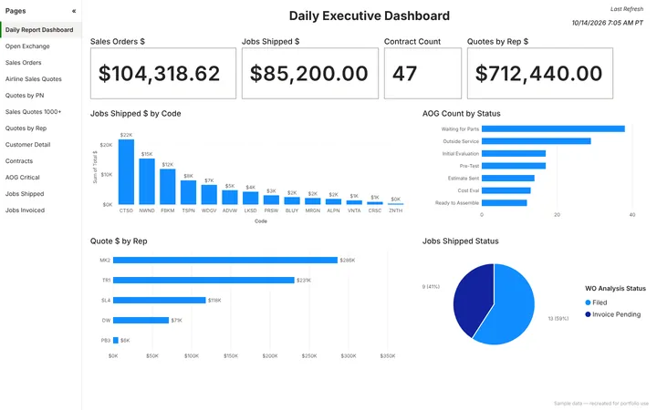
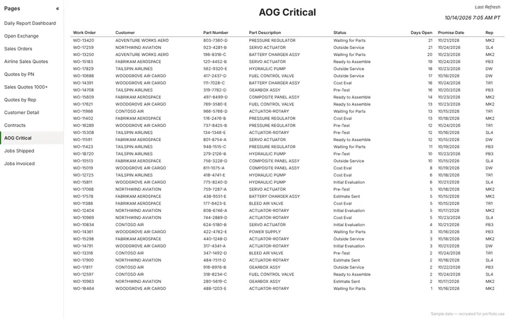
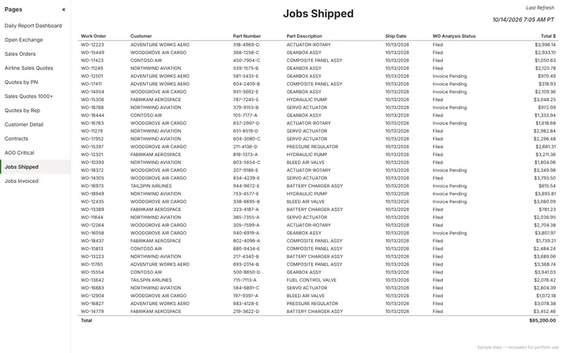

Daily executive dashboard
- Problem
- Leadership needed a single daily snapshot of sales orders, shipments, quotes, contracts, and aircraft-on-ground (AOG) priority jobs, plus the detail behind each number.
- Approach
- Built a 12-page Power BI report that refreshes every morning: an executive dashboard with headline KPIs, shipped dollars by customer, AOG jobs by status, and quotes by sales rep, backed by 11 detail pages for open exchanges, sales orders, airline quotes, quotes by part number and rep, contracts, AOG critical jobs, and jobs shipped and invoiced.
- Result
- A daily report for leadership: the day's numbers at a glance, with every figure traceable to the work orders behind it.
-

Daily Executive Dashboard -

AOG Critical (table page) -

Jobs Shipped (table page)
Recreated with sample data. The live report uses confidential company data.
- Power BI
- DAX
- Scheduled refresh
- Multi-page report design